R Project
Author: Ivan Inđić
Date: 26.09.2020
Title: Dataset on positive mental health of Indonesian, Malaysian, and Thailand university students
Task 1.
First step would be to load packages that we will be using.
library("readxl")
library("plyr")
library("xtable")
library("htmlTable")
library("Hmisc")
library("agricolae")
library("equaltestMI")
library("semTools")
library("semPlot")
library("FSA")
library("dunn.test")
After this we need to load data into dataframes and do some filtering because of some NA's that are present.
indonesia <- read_xlsx("/home/ivan/Downloads/ScienceDirect_files_17Sep2020_12-27-43.137/1-s2.0-S2352340920312087-mmc4.xlsx", sheet = "INDONESIA")
malaysia <- read_xlsx("/home/ivan/Downloads/ScienceDirect_files_17Sep2020_12-27-43.137/1-s2.0-S2352340920312087-mmc4.xlsx", sheet="MALAYSIA")
thailand <- read_xlsx("/home/ivan/Downloads/ScienceDirect_files_17Sep2020_12-27-43.137/1-s2.0-S2352340920312087-mmc4.xlsx", sheet="THAILAND")
indonesia <- indonesia[1:331,]
malaysia <- malaysia[1:320,]
indonesia["country"] <- "Indonesia"
malaysia["country"] <- "Malaysia"
thailand["country"] <- "Thailand"
names(malaysia)[names(malaysia)== "FTotal"] <- "Ftotal"
names(malaysia)[names(malaysia)== "ETotal"] <- "Etotal"
indonesia$GENDER[indonesia$GENDER=="Perempuan"] <- "F"
indonesia$GENDER[indonesia$GENDER=="Laki-laki"] <- "M"
malaysia$GENDER[malaysia$GENDER=="PEREMPUAN"] <- "F"
malaysia$GENDER[malaysia$GENDER=="LELAKI"] <- "M"
thailand$GENDER[thailand$GENDER=="Perempuan"] <- "F"
thailand$GENDER[thailand$GENDER=="Laki-laki"] <- "M"
thailand$GENDER[thailand$GENDER=="waria" | thailand$GENDER=="Waria"] <- "Other"
thailand$GENDER[thailand$GENDER=="laki-laki"] <- "M"
Now we can calculate number of students per gender and age.
First we will be using full dataset.
gender.total <- matrix(c(nrow(total[total$GENDER=="F", ]), nrow(total[total$GENDER=="F", ])/nrow(total),nrow(total[total$GENDER=="M", ]), nrow(total[total$GENDER=="M", ])/nrow(total), nrow(total[total$GENDER=="Other", ]), nrow(total[total$GENDER=="Other", ])/nrow(total), nrow(total), 1), ncol = 2, byrow = TRUE)
colnames(gender.total) <- c("Frequency", "Percent")
rownames(gender.total) <- c("Female","Male", "Other", "Total")
age.total <- matrix(c(nrow(total[total$Age <= 17, ]), nrow(total[total$Age <= 17, ])/nrow(total), nrow(total[total$Age >= 18 & total$Age <= 20, ]), nrow(total[total$Age >= 18 & total$Age <= 20, ])/nrow(total),nrow(total[total$Age >= 21 & total$Age <= 23, ]), nrow(total[total$Age >= 21 & total$Age <= 23, ])/nrow(total), nrow(total[total$Age >= 24 & total$Age <= 26, ]), nrow(total[total$Age >= 24 & total$Age <= 26, ])/nrow(total), nrow(total[total$Age >= 27 & total$Age <= 29, ]), nrow(total[total$Age >= 27 & total$Age <= 29, ])/nrow(total), nrow(total[total$Age >= 30, ]), nrow(total[total$Age >= 30, ])/nrow(total), nrow(total), 1), ncol = 2, byrow = TRUE)
colnames(age.total) <- c("Frequency", "Percent")
rownames(age.total) <- c("17 or less", "18-20","21-23","24-26","27-29", "30 or more", "Total")
| Gender |
Frequency |
Percent |
| Female |
605 |
0.624355005 |
| Male |
355 |
0.366357069 |
| Other |
9 |
0.009287926 |
| Total |
969 |
1.000000000 |
| Age |
Frequency |
Percent |
| 17 or less |
5 |
0.005159959 |
| 18-20 |
497 |
0.512899897 |
| 21-23 |
406 |
0.418988648 |
| 24-26 |
60 |
0.061919505 |
| 27-29 |
0 |
0.000000000 |
| 30 or more |
1 |
0.001031992 |
| Total |
969 |
1.000000000 |
Now, same calculations but only for Indonesia.
gender.indonesia <- matrix(c(nrow(indonesia[indonesia$GENDER=="F", ]), nrow(indonesia[indonesia$GENDER=="F", ])/nrow(indonesia),nrow(indonesia[indonesia$GENDER!="F", ]), nrow(indonesia[indonesia$GENDER!="F", ])/nrow(indonesia), nrow(indonesia), 1), ncol = 2, byrow = TRUE)
colnames(gender.indonesia) <- c("Frequency", "Percent")
rownames(gender.indonesia) <- c("Female","Male", "Total")
age.indonesia <- matrix(c(nrow(indonesia[indonesia$Age <= 17, ]), nrow(indonesia[indonesia$Age <= 17, ])/nrow(indonesia), nrow(indonesia[indonesia$Age >= 18 & indonesia$Age <= 20, ]), nrow(indonesia[indonesia$Age >= 18 & indonesia$Age <= 20, ])/nrow(indonesia),nrow(indonesia[indonesia$Age >= 21 & indonesia$Age <= 23, ]), nrow(indonesia[indonesia$Age >= 21 & indonesia$Age <= 23, ])/nrow(indonesia), nrow(indonesia[indonesia$Age >= 24 & indonesia$Age <= 26, ]), nrow(indonesia[indonesia$Age >= 24 & indonesia$Age <= 26, ])/nrow(indonesia), nrow(indonesia[indonesia$Age >= 27 & indonesia$Age <= 29, ]), nrow(indonesia[indonesia$Age >= 27 & indonesia$Age <= 29, ])/nrow(indonesia), nrow(indonesia[indonesia$Age >= 30, ]), nrow(indonesia[indonesia$Age >= 30, ])/nrow(indonesia), nrow(indonesia), 1), ncol = 2, byrow = TRUE)
colnames(age.indonesia) <- c("Frequency", "Percent")
rownames(age.indonesia) <- c("17 or less", "18-20","21-23","24-26","27-29", "30 or more", "Total")
| Gender |
Frequency |
Percent |
| Female |
189 |
0.570997 |
| Male |
142 |
0.429003 |
| Total |
331 |
1.000000 |
| Age |
Frequency |
Percent |
| 17 or less |
3 |
0.009063444 |
| 18-20 |
239 |
0.722054381 |
| 21-23 |
87 |
0.262839879 |
| 24-26 |
1 |
0.003021148 |
| 27-29 |
0 |
0.000000000 |
| 30 or more |
1 |
0.003021148 |
| Total |
331 |
1.000000000 |
Now for Malaysia.
gender.malaysia <- matrix(c(nrow(malaysia[malaysia$GENDER=="F", ]), nrow(malaysia[malaysia$GENDER=="F", ])/nrow(malaysia),nrow(malaysia[malaysia$GENDER!="F", ]), nrow(malaysia[malaysia$GENDER!="F", ])/nrow(malaysia), nrow(malaysia), 1), ncol = 2, byrow = TRUE)
colnames(gender.malaysia) <- c("Frequency", "Percent")
rownames(gender.malaysia) <- c("Female","Male", "Total")
age.malaysia <- matrix(c(nrow(malaysia[malaysia$Age <= 17, ]), nrow(malaysia[malaysia$Age <= 17, ])/nrow(malaysia), nrow(malaysia[malaysia$Age >= 18 & malaysia$Age <= 20, ]), nrow(malaysia[malaysia$Age >= 18 & malaysia$Age <= 20, ])/nrow(malaysia),nrow(malaysia[malaysia$Age >= 21 & malaysia$Age <= 23, ]), nrow(malaysia[malaysia$Age >= 21 & malaysia$Age <= 23, ])/nrow(malaysia), nrow(malaysia[malaysia$Age >= 24 & malaysia$Age <= 26, ]), nrow(malaysia[malaysia$Age >= 24 & malaysia$Age <= 26, ])/nrow(malaysia), nrow(malaysia[malaysia$Age >= 27 & malaysia$Age <= 29, ]), nrow(malaysia[malaysia$Age >= 27 & malaysia$Age <= 29, ])/nrow(malaysia), nrow(malaysia[malaysia$Age >= 30, ]), nrow(malaysia[malaysia$Age >= 30, ])/nrow(malaysia), nrow(malaysia), 1), ncol = 2, byrow = TRUE)
colnames(age.malaysia) <- c("Frequency", "Percent")
rownames(age.malaysia) <- c("17 or less", "18-20","21-23","24-26","27-29", "30 or more", "Total"
| Gender |
Frequency |
Percent |
| Female |
172 |
0.5375 |
| Male |
148 |
0.4625 |
| Total |
320 |
1.0000 |
| Age |
Frequency |
Percent |
| 17 or less |
0 |
0.000000 |
| 18-20 |
32 |
0.100000 |
| 21-23 |
229 |
0.715625 |
| 24-26 |
59 |
0.184375 |
| 27-29 |
0 |
0.000000 |
| 30 or more |
0 |
0.000000 |
| Total |
320 |
1.000000 |
Now, graphical view of those calculations.
par(mfrow=c(2,2))
barplot(malaysia.age, ylim = c(0,150), main = "Age frequency [malaysia]", ylab = "Frequency", xlab = "Age")
barplot(indonesia.age, ylim = c(0,150), main = "Age frequency [Indonesia]", ylab = "Frequency", xlab = "Age")
barplot(thailand.age, ylim = c(0,150), main = "Age frequency [Thailand]", ylab = "Frequency", xlab = "Age")
barplot(total.age, ylim = c(0,300), main = "Age frequency [total]", ylab = "Frequency", xlab = "Age")
barplot(malaysia.gender, main = "Gender frequency [malaysia]", ylim = c(0,200), ylab = "Frequency", xlab = "Gender")
barplot(indonesia.gender, main = "Gender frequency [Indonesia]", ylim = c(0,200), ylab = "Frequency", xlab = "Gender")
barplot(thailand.gender, main = "Gender frequency [Thailand]", ylim = c(0,300), ylab = "Frequency", xlab = "Gender")
barplot(total.gender, main = "Gender frequency [total]", ylim = c(0,650), ylab = "Frequency", xlab = "Gender")
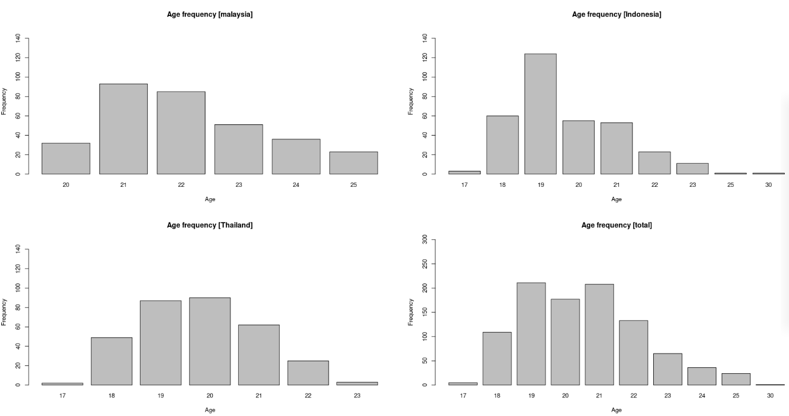
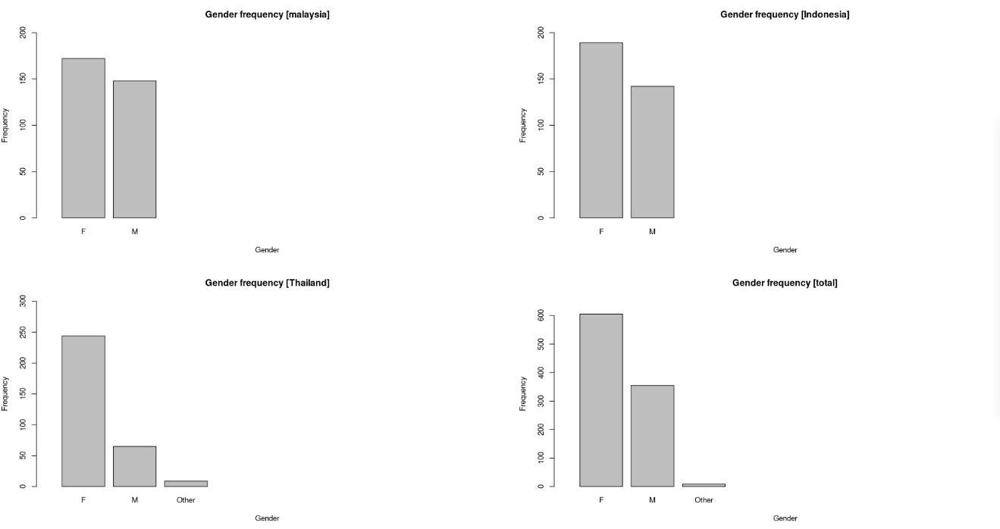
Task 2. Basic descriptive statistics
In this task we need to calculate basic descriptive statistics for every catergory we have. Our categories are Positive Mental Health,Subjective Happiness, Forgiveness, Humility and Information Literacy Self Efficacy. For this task we'll be using summary, var and sd functions.
columns <- c("Etotal","Ctotal","Dtotal","Ftotal","Gtotal")
total.total <- total[ ,columns]
colnames(total.total) <- c ("Positive Mental Health", "Subjective Happiness", "Forgiveness", "Humility", "Information Literacy Self Efficacy")
total.descriptive <- matrix(nrow = 5,c(sapply(total.total, FUN = max),sapply(total.total, FUN = min),sapply(total.total, FUN = mean),sapply(total.total, FUN = sd),sapply(total.total, FUN = var)))
colnames(total.descriptive) <- c("Maximum", "Minimum", "Mean", "Sd", "Variance")
rownames(total.descriptive) <- c("Positive Mental Health", "Subjective Happiness", "Forgiveness", "Humility", "Information Literacy Self Efficacy")
total.descriptive
total.indonesia <- indonesia[ ,columns]
colnames(total.indonesia) <- c ("Positive Mental Health", "Subjective Happiness", "Forgiveness", "Humility", "Information Literacy Self Efficacy")
indonesia.descriptive <- matrix(nrow = 5,c(sapply(total.indonesia, FUN = max),sapply(total.indonesia, FUN = min),sapply(total.indonesia, FUN = mean),sapply(total.indonesia, FUN = sd),sapply(total.indonesia, FUN = var)))
colnames(indonesia.descriptive) <- c("Maximum", "Minimum", "Mean", "Sd", "Variance")
rownames(indonesia.descriptive) <- c("Positive Mental Health", "Subjective Happiness", "Forgiveness", "Humility", "Information Literacy Self Efficacy")
indonesia.descriptive
total.malaysia <- malaysia[ ,columns]
colnames(total.malaysia) <- c ("Positive Mental Health", "Subjective Happiness", "Forgiveness", "Humility", "Information Literacy Self Efficacy")
malaysia.descriptive <- matrix(nrow = 5,c(sapply(total.malaysia, FUN = max),sapply(total.malaysia, FUN = min),sapply(total.malaysia, FUN = mean),sapply(total.malaysia, FUN = sd),sapply(total.malaysia, FUN = var)))
colnames(malaysia.descriptive) <- c("Maximum", "Minimum", "Mean", "Sd", "Variance")
rownames(malaysia.descriptive) <- c("Positive Mental Health", "Subjective Happiness", "Forgiveness", "Humility", "Information Literacy Self Efficacy")
malaysia.descriptive
total.thailand <- thailand[ ,columns]
colnames(total.thailand) <- c ("Positive Mental Health", "Subjective Happiness", "Forgiveness", "Humility", "Information Literacy Self Efficacy")
thailand.descriptive <- matrix(nrow = 5,c(sapply(total.thailand, FUN = max),sapply(total.thailand, FUN = min),sapply(total.thailand, FUN = mean),sapply(total.thailand, FUN = sd),sapply(total.thailand, FUN = var)))
colnames(thailand.descriptive) <- c("Maximum", "Minimum", "Mean", "Sd", "Variance")
rownames(thailand.descriptive) <- c("Positive Mental Health", "Subjective Happiness", "Forgiveness", "Humility", "Information Literacy Self Efficacy")
thailand.descriptive
par(mfrow=c(1,5))
hist(total.malaysia$`Positive Mental Health`, main="Positive mental health [Malaysia]", xlab= "Value", xlim = c(10,50), ylim = c(0, 140))
hist(total.malaysia$`Subjective Happiness`, main = "Subjective Happiness [Malaysia]", xlab = "Value", ylim = c(0,100), xlim=c(0,25))
hist(total.malaysia$Forgiveness, main = "Forgiveness [Malaysia]", ylim = c(0,100), xlab = "Value", xlim = c(20,100))
hist(total.malaysia$Humility, main = "Humility[Malaysia]", xlab = "Value", xlim = c(0,25), ylim = c(0,100))
hist(total.malaysia$`Information Literacy Self Efficacy`, main = "Information Literacy Self Efficacy[Malaysia]", xlab = "Value", ylim = c(0,120), xlim = c(30,90))
hist(total.indonesia$`Positive Mental Health`, main="Positive mental health [Indonesia]", xlab= "Value", xlim = c(0,50), ylim = c(0, 100))
hist(total.indonesia$`Subjective Happiness`, main = "Subjective Happiness [Indonesia]", xlab = "Value", ylim = c(0,100), xlim=c(0,25))
hist(total.indonesia$Forgiveness, main = "Forgiveness [Indonesia]", ylim = c(0,100), xlab = "Value", xlim = c(20,120))
hist(total.indonesia$Humility, main = "Humility[Indonesia]", xlab = "Value", xlim = c(5,25), ylim = c(0,60))
hist(total.indonesia$`Information Literacy Self Efficacy`, main = "Information Literacy Self Efficacy[Indonesia]", xlab = "Value", ylim = c(0,80), xlim = c(20,90))
hist(total.thailand$`Positive Mental Health`, main="Positive mental health [Thailand]", xlab= "Value", ylim = c(0,160))
hist(total.thailand$`Subjective Happiness`, main = "Subjective Happiness [Thailand]", xlab = "Value", ylim = c(0,70), xlim=c(0,25))
hist(total.thailand$Forgiveness, main = "Forgiveness [Thailand]", ylim = c(0,60), xlab = "Value", xlim = c(40,110))
hist(total.thailand$Humility, main = "Humility[Thailand]", xlab = "Value", xlim = c(5,25))
hist(total.thailand$`Information Literacy Self Efficacy`, main = "Information Literacy Self Efficacy[Thailand]", xlab = "Value", ylim = c(0,100), xlim = c(30,90))
hist(total.total$`Positive Mental Health`, main="Positive mental health [Total]", xlab= "Value", xlim = c(0,50), ylim = c(0,400))
hist(total.total$`Subjective Happiness`, main = "Subjective Happiness [Total]", xlab = "Value", ylim = c(0, 250), xlim=c(0,25))
hist(total.total$Forgiveness, main = "Forgiveness [Total]", ylim = c(0,250), xlab = "Value", xlim = c(20,120))
hist(total.total$Humility, main = "Humility[Total]", xlab = "Value", xlim = c(0,25), ylim = c(0,250))
hist(total.total$`Information Literacy Self Efficacy`, main = "Information Literacy Self Efficacy[Total]", xlab = "Value", ylim = c(0,300), xlim = c(20,90))
| Variables (Total) |
Maximum |
Minimum |
Mean |
Sd |
Variance |
| Positive Mental Health |
45 |
9 |
33.66563 |
5.644758 |
31.86329 |
| Subjective Happiness |
21 |
4 |
14.73787 |
3.558168 |
12.66056 |
| Forgiveness |
110 |
24 |
77.77812 |
13.926063 |
193.93522 |
| Humility |
21 |
4 |
14.68834 |
3.383217 |
11.44616 |
| Information Literacy Self Efficacy |
85 |
27 |
63.77090 |
8.079866 |
65.28423 |
| Variables(Indonesia) |
Maximum |
Minimum |
Mean |
Sd |
Variance |
| Positive Mental Health |
45 |
9 |
34.51964 |
6.348615 |
40.304916 |
| Subjective Happiness |
21 |
5 |
14.02417 |
3.272385 |
10.708505 |
| Forgiveness |
110 |
35 |
85.06949 |
13.747882 |
189.004248 |
| Humility |
21 |
9 |
16.41994 |
2.606884 |
6.795844 |
| Information Literacy Self Efficacy |
85 |
27 |
63.12689 |
10.472861 |
109.680820 |
| Variables(Malaysia) |
Maximum |
Minimum |
Mean |
Sd |
Variance |
| Positive Mental Health |
45 |
13 |
33.71250 |
5.599359 |
31.35282 |
| Subjective Happiness |
21 |
4 |
16.22812 |
3.691194 |
13.62491 |
| Forgiveness |
88 |
24 |
66.31875 |
7.644837 |
58.44353 |
| Humility |
21 |
4 |
13.08437 |
3.268891 |
10.68565 |
| Information Literacy Self Efficacy |
85 |
39 |
64.80000 |
5.801092 |
33.65266 |
| Varibles(Thailand) |
Maximum |
Minimum |
Mean |
Sd |
Variance |
| Positive Mental Health |
45 |
14 |
32.72956 |
4.706108 |
22.14745 |
| Subjective Happiness |
21 |
5 |
13.98113 |
3.233249 |
10.45390 |
| Forgiveness |
110 |
45 |
81.72013 |
11.531618 |
132.97821 |
| Humility |
21 |
6 |
14.50000 |
3.370638 |
11.36120 |
| Information Literacy Self Efficacy |
84 |
37 |
63.40566 |
7.047981 |
49.67404 |
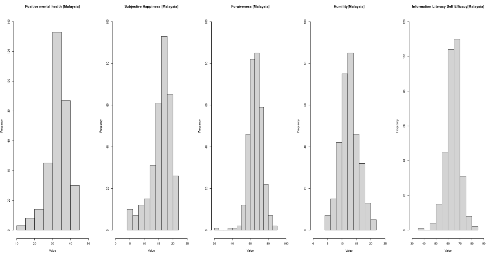
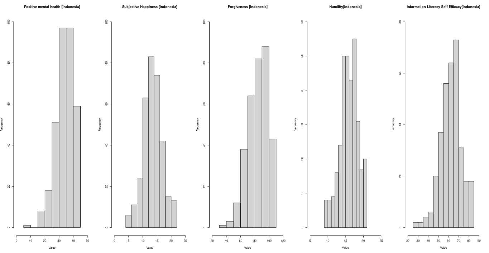
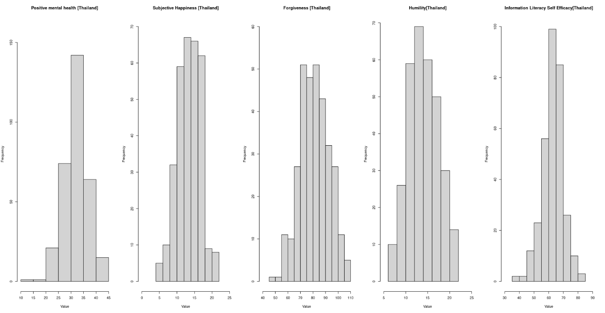
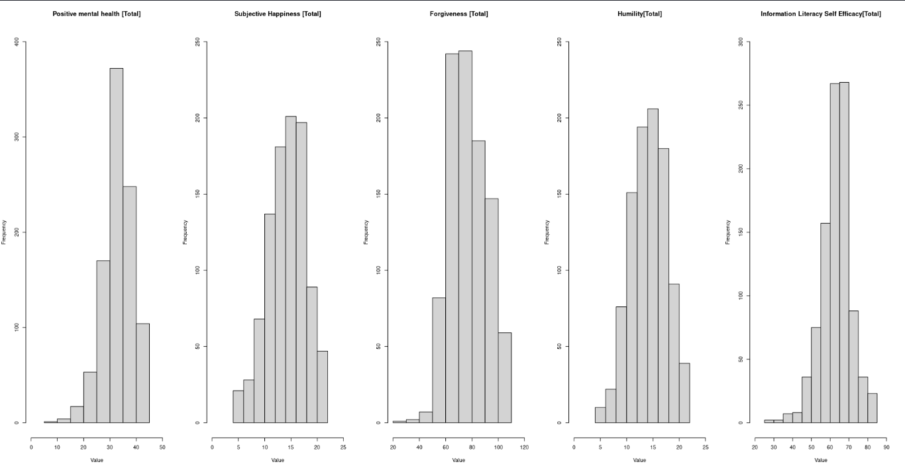
Task3. Confirmatory factor analysis
Factors are the variables that experimenters control during an experiment in order to determine their effect on the response variable. A factor can take on only a small number of values, which are known as factor levels. Factors can be a categorical variable or based on a continuous variable but only use a limited number of values chosen by the experimenters.
overall.model.full <- 'ILSE =~ G1 + G6 + G7 + G8 + G9 + G10 + G15 + G18 + G19 + G20 + G21 + G22 + G23 + G24 + G25 + G27 + G28; H =~ F4 + F5 + F6; PMH =~ E1 + E2
+ E3 + E4 + E5 + E6 + E7 + E8 + E9; F =~ D8 + D9 + D12 + D13 + D14 + D15 + D16 + D17 + D18 + D19 + D20 + D21 + D22 + D23 + D24 + D25; SH =~ C1 + C2 + C3'
overall.fit <- cfa(model = overall.model.full, data = total, meanstructure=TRUE, group = "country")
inspect(overall.fit,what="std")
summary(overall.fit, standardized = TRUE, rsquare = TRUE, fit.measure = TRUE)
| No |
Variable |
Items |
Factor Loadings |
|
|
|
PMH |
|
Malaysia |
Indonesia |
Thailand |
| 1 |
|
1 |
0.667 |
0.718 |
0.700 |
|
|
2 |
0.659 |
0.819 |
0.794 |
|
|
3 |
0.736 |
0.721 |
0.726 |
|
|
4 |
0.660 |
0.750 |
0.539 |
|
|
5 |
0.688 |
0.710 |
0.463 |
|
|
6 |
0.723 |
0.745 |
0.651 |
|
|
7 |
0.659 |
0.654 |
0.544 |
|
|
8 |
0.671 |
0.804 |
0.541 |
|
|
9 |
0.590 |
0.643 |
0.410 |
|
SH |
|
Malaysia |
Indonesia |
Thailand |
| 2 |
|
1 |
0.852 |
0.765 |
0.595 |
|
|
2 |
0.823 |
0.734 |
0.782 |
|
|
3 |
0.652 |
0.639 |
0.831 |
|
F |
|
Malaysia |
Indonesia |
Thailand |
| 3 |
|
1 |
0.488 |
0.368 |
0.540 |
|
|
2 |
0.490 |
0.322 |
0.559 |
|
|
3 |
0.373 |
0.235 |
0.593 |
|
|
4 |
0.389 |
0.305 |
0.588 |
|
|
5 |
0.347 |
0.345 |
0.521 |
|
|
6 |
0.545 |
0.631 |
0.509 |
|
|
7 |
0.647 |
0.795 |
0.626 |
|
|
8 |
0.608 |
0.702 |
0.557 |
|
|
9 |
0.661 |
0.870 |
0.668 |
|
|
10 |
0.622 |
0.771 |
0.604 |
|
|
11 |
0.517 |
0.694 |
0.587 |
|
|
12 |
0.664 |
0.806 |
0.689 |
|
|
13 |
0.510 |
0.455 |
0.373 |
|
|
14 |
0.460 |
0.372 |
0.259 |
|
|
15 |
0.418 |
0.420 |
0.317 |
|
|
16 |
0.286 |
0.324 |
0.354 |
|
H |
|
Malaysia |
Indonesia |
Thailand |
| 4 |
|
1 |
0.853 |
0.745 |
0.793 |
|
|
2 |
0.721 |
0.858 |
0.769 |
|
|
3 |
0.244 |
0.625 |
0.463 |
|
ILSE |
|
Malaysia |
Indonesia |
Thailand |
| 5 |
|
1 |
0.312 |
0.486 |
0.245 |
|
|
2 |
0.137 |
0.625 |
0.394 |
|
|
3 |
0.142 |
0.399 |
0.304 |
|
|
4 |
0.426 |
0.541 |
0.227 |
|
|
5 |
0.404 |
0.555 |
0.227 |
|
|
6 |
0.438 |
0.591 |
0.280 |
|
|
7 |
0.136 |
0.530 |
0.440 |
|
|
8 |
0.284 |
0.622 |
0.466 |
|
|
9 |
0.226 |
0.611 |
0.282 |
|
|
10 |
0.395 |
0.668 |
0.486 |
|
|
11 |
0.505 |
0.699 |
0.540 |
|
|
12 |
0.611 |
0.830 |
0.827 |
|
|
13 |
0.675 |
0.842 |
0.856 |
|
|
14 |
0.639 |
0.808 |
0.794 |
|
|
15 |
0.415 |
0.708 |
0.722 |
|
|
16 |
0.126 |
0.633 |
0.450 |
|
|
17 |
0.065 |
0.606 |
0.386 |
Root Mean Square Error of Approximation:
RMSEA 0.081
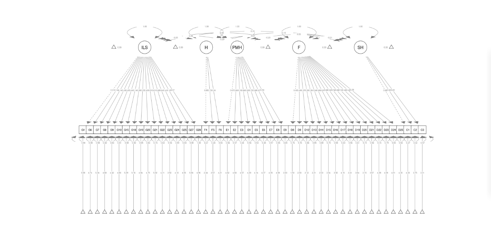
Task 4. Correlation matrix
In this task we observe correlation between our variables. We will see what impact variables have on each other. In addition to correlation, author in his work also computes p significance. To do this we will use custom function.
corstarsl <- function(x){
require(Hmisc)
x <- as.matrix(x)
R <- rcorr(x)$r
p <- rcorr(x)$P
## define notions for significance levels; spacing is important.
mystars <- ifelse(p < .001, "** ", ifelse(p < .01, "** ", ifelse(p < .05, "* ", " ")))
## trunctuate the matrix that holds the correlations to two decimal
R <- format(round(cbind(rep(-1.11, ncol(x)), R), 2))[,-1]
## build a new matrix that includes the correlations with their apropriate stars
Rnew <- matrix(paste(R, mystars, sep=""), ncol=ncol(x))
diag(Rnew) <- paste(diag(R), " ", sep="")
rownames(Rnew) <- colnames(x)
colnames(Rnew) <- paste(colnames(x), "", sep="")
## remove upper triangle
Rnew <- as.matrix(Rnew)
Rnew[upper.tri(Rnew, diag = TRUE)] <- ""
Rnew <- as.data.frame(Rnew)
## remove last column and return the matrix (which is now a data frame)
Rnew <- cbind(Rnew[1:length(Rnew)-1])
return(Rnew)
}
corstarsl(total.total)
corstarsl(total.indonesia)
corstarsl(total.malaysia)
corstarsl(total.thailand)
| Total |
Positive Mental Health |
Subjective Happiness |
Forgiveness |
Humility |
| Positive Mental Health |
|
|
|
|
| Subjective Happiness |
0.48** |
|
|
|
| Forgiveness |
0.16** |
-0.09** |
|
|
| Humility |
-0.18** |
-0.25** |
0.28** |
|
| Information Literacy Self Efficacy |
0.39** |
0.25** |
0.04 |
-0.14** |
| Indonesia |
Positive Mental Health |
Subjective Happiness |
Forgiveness |
Humility |
| Positive Mental Health |
|
|
|
|
| Subjective Happiness |
0.47** |
|
|
|
| Forgiveness |
0.24** |
0.13* |
|
|
| Humility |
-0.21** |
-0.15** |
0.17** |
|
| Information Literacy Self Efficacy |
0.44** |
0.29** |
0.12* |
-0.16** |
| Malaysia |
Positive Mental Health |
Subjective Happiness |
Forgiveness |
Humility |
| Positive Mental Health |
|
|
|
|
| Subjective Happiness |
0.45** |
|
|
|
| Forgiveness |
0.01 |
0.02 |
|
|
| Humility |
-0.23** |
-0.12* |
-0.11 |
|
| Information Literacy Self Efficacy |
0.31** |
0.23** |
0.00 |
-0.16** |
| Thailand |
Positive Mental Health |
Subjective Happiness |
Forgiveness |
Humility |
| Positive Mental Health |
|
|
|
|
| Subjective Happiness |
0.62** |
|
|
|
| Forgiveness |
0.26** |
0.16** |
|
|
| Humility |
-0.26** |
-0.25** |
0.15** |
|
| Information Literacy Self Efficacy |
0.42** |
0.19** |
0.15** |
-0.07 |
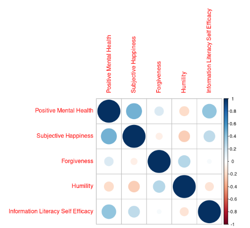 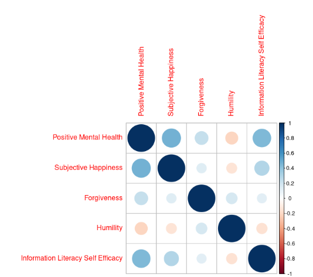
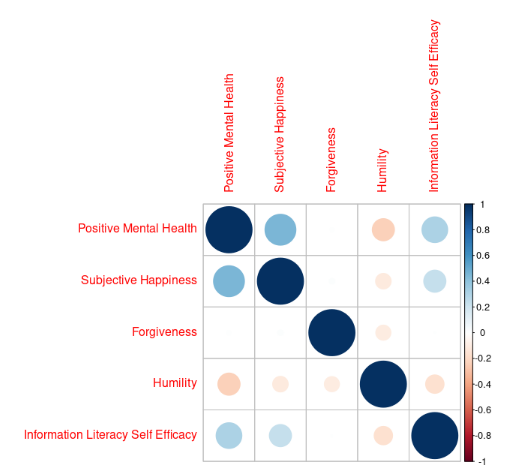 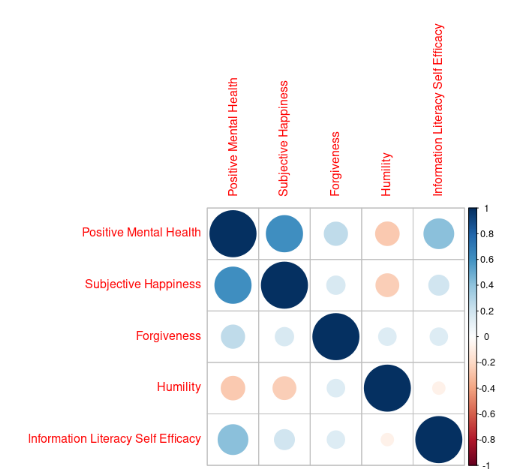
Task 5. Regression analysis of variables
In this task we will do linear regression to determin the influence of subjective happiness, forgiveness, humility, and information literacy self-efficacy on mental health.
fit <- lm(`Positive Mental Health` ~ `Subjective Happiness` + Forgiveness + Humility + `Information Literacy Self Efficacy`, data=total.total)
summary(fit)
Residuals:
Min 1Q Median 3Q Max
-17.659 -2.569 -0.097 2.708 17.959
Residual standard error: 4.562 on 964 degrees of freedom
Multiple R-squared: 0.3495, Adjusted R-squared: 0.3468
F-statistic: 129.5 on 4 and 964 DF, p-value: < 2.2e-16
| Coeficients |
Estimate |
Std. Error |
t value |
Pr(>t) |
| (Intercept) |
8.07221 |
1.62240 |
4.975 |
7.71e-07 *** |
| Subjective Happiness |
0.63746 |
0.04366 |
14.601 |
< 2e-16 *** |
| Forgiveness |
0.08666 |
0.01101 |
7.868 |
9.63e-15 *** |
| Humility |
-0.17141 |
0.04669 |
-3.672 |
0.000254 *** |
| Information Literacy Self Efficacy |
0.18780 |
0.01890 |
9.938 |
< 2e-16 *** |
Task 6. Kruskal Wallis test
The Kruskal–Wallis test is a non-parametric method for testing whether samples originate from the same distribution.It is used for comparing two or more independent samples of equal or different sample sizes.Non-parametric means that the test doesn’t assume our data comes from a particular distribution.
H0: population medians are equal.
H1: population medians are not equal.
The Kruskal Wallis test will tell you if there is a significant difference between groups. However, it won’t tell you which groups are different. The Kruskal Wallis test uses ranks instead of actual data. Rank references the position of the value in the sorted vector and is in the same order as the original sequence
columns <- c("Etotal","Ctotal","Dtotal","Ftotal","Gtotal", "country")
total.total <- total[ ,columns]
colnames(total.total) <- c ("Positive Mental Health", "Subjective Happiness", "Forgiveness", "Humility", "Information Literacy Self Efficacy", "Country")
kruskal(total.total$`Positive Mental Health`, total.total$Country,console = T)
kruskal(total.total$`Subjective Happiness`, total.total$Country,console = T)
kruskal(total.total$`Forgiveness`, total.total$Country,console = T)
kruskal(total.total$`Humility`, total.total$Country,console = T)
kruskal(total.total$`Information Literacy Self Efficacy`, total.total$Country,console = T)
kruskal.test(`Positive Mental Health` ~ Country, data=total.total)
dunnTest(total.total$`Positive Mental Health`,total.total$Country, method = "bonferroni")
| Variables |
Country |
Mean rank |
N |
df |
Sig |
| Positive Mental Health |
Indonesia |
533.3958 |
331 |
2 |
.000 |
|
Malaysia |
493.0391 |
320 |
|
|
|
Thailand |
426.5362 |
318 |
|
|
|
|
|
|
|
|
| Subjective Happiness |
Indonesia |
418.4320 |
331 |
2 |
.000 |
|
Malaysia |
619.2328 |
320 |
|
|
|
Thailand |
419.2123 |
318 |
|
|
|
|
|
|
|
|
| Forgiveness |
Indonesia |
634.6390 |
331 |
2 |
.000 |
|
Malaysia |
241.0062 |
320 |
|
|
|
Thailand |
574.7720 |
318 |
|
|
|
|
|
|
|
|
| Humility |
Indonesia |
632.5831 |
331 |
2 |
.000 |
|
Malaysia |
351.5375 |
320 |
|
|
|
Thailand |
465.6855 |
318 |
|
|
|
|
|
|
|
|
| Information Literacy Self Efficacy |
Indonesia |
466.0015 |
331 |
2 |
.000 |
|
Malaysia |
523.4344 |
320 |
|
|
|
Thailand |
466.0991 |
318 |
|
|
| Comparison |
Z |
P.unadj |
P.adj |
| 1 Indonesia - Malaysia |
1.843117 |
6.531193e-02 |
1.959358e-01 |
| 2 Indonesia - Thailand |
4.872563 |
1.101598e-06 |
3.304793e-06 |
| 3 Malaysia - Thailand |
3.007166 |
2.636954e-03 |
7.910861e-03 |